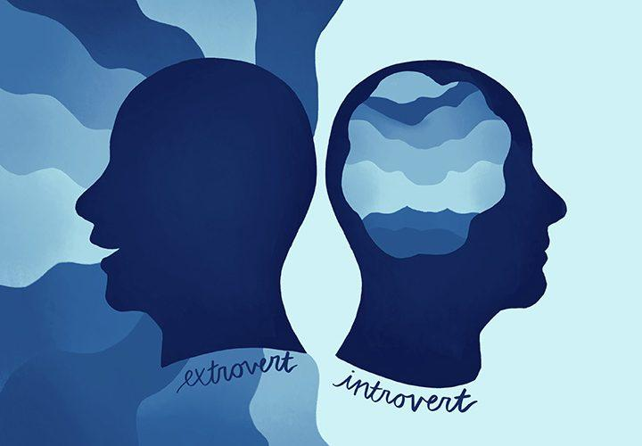

An introvert is a person with qualities of a personality type known as introversion,
which means that they feel more comfortable focusing on their inner thoughts and ideas,
rather than what's happening externally.
They enjoy spending time with just one or two people,rather than large groups or crowds.
The lifestyle of an Introvert.
by Adrian Mwangi
Web designer

Who is an Inrovert,Extrovert?🔍


Extroverts are often described as the life of the party.
Their outgoing, vibrant nature draws people to them, and they have a hard time turning away the attention.
They thrive off the interaction.
Are You an Introvert?🧐 Here’s How to Tell...

What Goes On In THeir Minds...
Since we now know who an introvert and extrovert is,lets sink in into their minds 🧠 for a little bit .
If you actually take time to think about it,Introverts are very interesting people.
What differentiates them from the Extroverts is only how they handle their things so lets see
how an introvert handles different events and situations.
lets take the case of a university student who happens to be an introvert.Sally`s her name👩🎓 .You may find
that in an ongoing class,being an Introvert,her mind will tend to think and wonder in so many places and it
almost feels as if she has a whole solar system running in her head.
And thats why in most cases you will find such a person very quiet in class and contributes when necessary .
unfortunately it can get uncomfortable when her minds keeps wondering and she cant stop and concentrate
in a class .A lecturer may happen to notice and mistake her lack of concentration to being uninterested on what is going on.😢
Being in a class setting can be way out of an introverts comfort zone and this makes them very anxious and uncomfortable .But to others they just seem quiet and antisocial.Alot goes on in the inside.
They take high consideration to what people think about them and how people take them.
An introvert will do all he/she can to avoid small talks because they value their "me time" and
are comfortable with it ,while other people start small talks to kill the silence .
Extroverts tend to be stimulated by events such as parties🥳 but for introverts,despite the crowd they feel
very lonely and uncomfortable .
Being an Introvert doesnt necessarily mean that you are shy but as Psychology today explains,
"Introverts are drained by social encounters and are energized by solitary,peace and quiet.">

Introversion defines a group of people who are focussed inward rather than outward and
they can be social at the same time if need be ofcourse.
They do everything after very careful thought and planning and this is why sally can take more time to
answer a question❔ in class than other students And this can be misinterpretted to being uninteligent .
Its sad but its just the truth .An introvert will enjoy opening up in writting📖 instead of actual words .
>A downside to being an introvert comes in when they avoid excessive stimulation and dont engage in enough
external activity to give their minds🧠 something to do beside cannibalizing itself.
Am not trying to illustrate that being an Introvert is a curse or something but there are some things,
that peple need to know about these people since its not written on their foreheads
We need to judge less and ask more questions instead..
Its amazing how these people are almost never bored .If they run out of things to do,their own thoughts
and imagination could keep them busy for a really long time ⏲ .
Being an Introvert isnt that bad, as Marsh Pinto writes in the article " 6 reasons why
you should appreciate Introverts" published by Huffington post :

"while extroverts may speak every thought that hits their mind,an Introvert will filter their thoughts
and only speak of the ones that they think are best to share ."
Characteristics of an Introvert
Introverts are good listeners.
Introverts listen before they speak.
They watch from the sidelines and take some mental notes before they insert themselves into any social situation.
This preparation allows them to enter a conversation confidently, without stumbling over their words or doubting the accuracy of what they say.
Introverts are self-sufficient.
Introverts are not dependent people.They believe it is foolish to depend on another person to take care of their material needs.
This freedom makes them feel empowered, because they know they can manage any curve ball that life might throw at them.

Introverts are super focused.
Introverts concentrate with everything they’ve got.
They make a point of paying attention to nonverbal cues that might reveal hidden meanings, because they know words are only half of the story.
This ability helps them avoid potential misunderstandings.
Introverts are easy to please.
Introverts don’t need much to feel happy and content.
They would rather stay home and enjoy a good book or bubble bath than go to a loud bar and buy expensive drinks.
This distinction helps them save money and relax after stressful days.

Introverts are good at studying.
Introverts believe knowledge is power.
They are intensely interested in the things that they care about and want to learn everything they can.
This eagerness helps them become experts in their fields.
Introverts are very observant.
Introverts identify changes in their environment very quickly.
They will probably be the first person to notice a new haircut.
This often causes their friends and coworkers to thank them for being so thoughtful.

Introverts are trustworthy people.
Introverts can keep secrets.
They know how hard it can be to trust somebody, so they won’t share a personal detail if you don’t want them to.
This is exactly why introverts are excellent best friends.
Introverts are committed to their goals.
Introverts tend to be driven and disciplined.
They don’t need approval from external sources, so they direct their energy to the pursuit of an ambitious goal instead.
This ambition often turns introverts into highly successful people.
Introverts are in touch with their feelings.
Introverts are masters of their emotions.
They reflect until they are able to understand the triggers that are responsible for their negative thoughts.
This retrospection helps them dig deep enough to deal with entrenched self-defeating beliefs that limit their potential.
Introverts are thought-provoking when you get them talking.
Introverts have interesting things to say.
They might not be fans of small talk, but that doesn’t mean they can’t be engaging in a deep discussion.
This distinction is a common source of confusion.